Designing the foundation for an agentic emissions operating system inside IFS CloudTM.
DESCRIPTION
I designed the foundational emissions management experience for IFS Zero inside IFS CloudTM, connecting enterprise activity data, emissions reporting, and reduction planning in one workspace. I led the UX from early discovery through delivery, shaping every screen around real user workflows, validated through customer interviews, usability testing with enterprise sustainability managers, and continuous iteration with engineering.
The experience brings companies, sites, emission sources, activity data, verified emission factors, and reduction targets into a connected operational picture. It gives sustainability teams a foundation to move from collecting data to understanding emissions and planning action within their ERP. Due to confidentiality, only a high-level overview is shared here.
FROM EMISSIONS DATA TO ENTERPRISE INTELLIGENCE
IFS now positions IFS Zero as an agentic emissions operating system that continuously monitors and helps reduce environmental impact. The product story extends beyond reporting: emissions become part of how an enterprise understands and improves its operations.
That direction sits alongside IFS Intelligence, which connects operational data with natural-language insight and governed AI actions. For emissions workflows, the design opportunity is to connect reliable data, clear decisions, and accountable action. This case study covers my foundational product design work through January 2026; the linked pages describe IFS's current product direction.
CONTEXT
The existing IFS Cloud interface had a well-known problem: heavy rendering patterns that slowed the entire system, froze screens on standard corporate hardware, and made day-to-day work painful. Sustainability tools in the market weren't much better, most were standalone products that forced double data entry and assumed users had environmental science backgrounds.
IFS ZeroTM had to solve both problems at once: build the first sustainability workspace natively inside an ERP, and prove a new, lighter architectural approach that wouldn't repeat the performance issues users already lived with. It also served as the pilot for IFS's next-generation frontend patterns.
Prepared for reviewReporting period · Supporting evidence
Illustrative workflow, not a live system activity feed.
Before
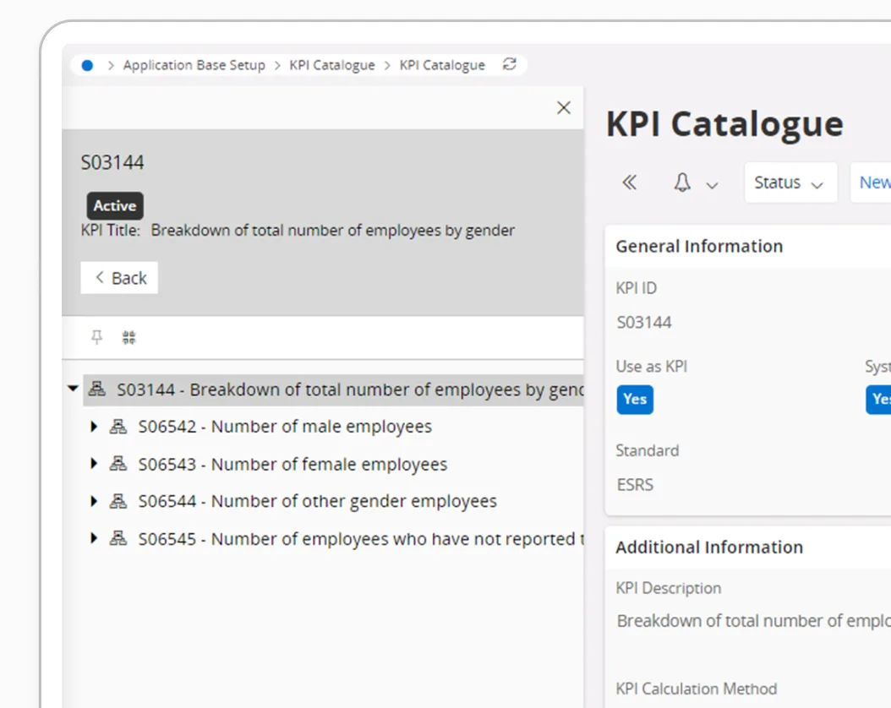
→
After
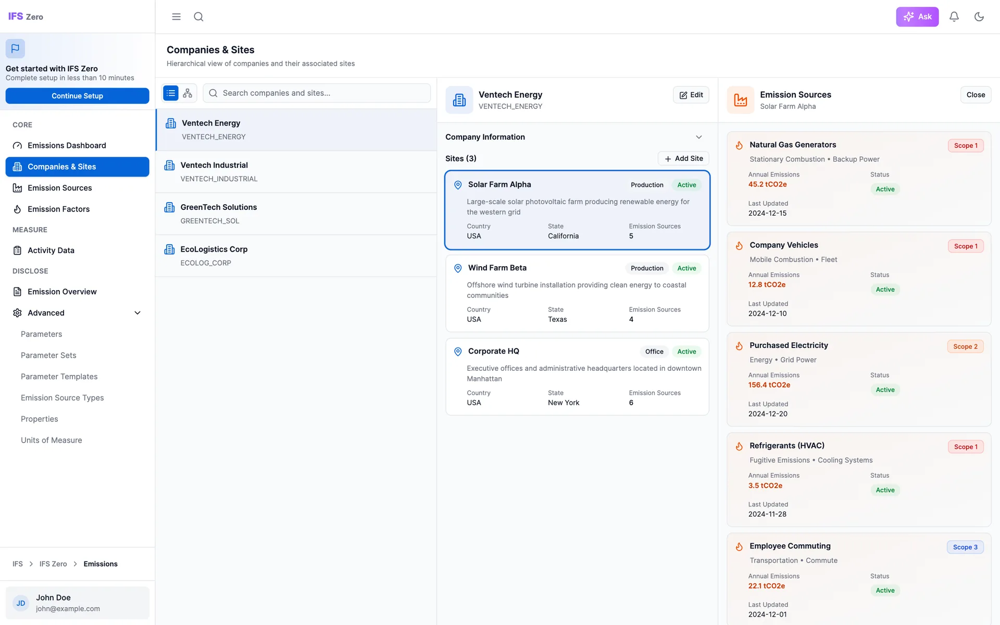
Rethinking the core pattern
From a cramped list that froze screens to a layout that actually breathes.
The old IFS Cloud list loaded the full tree into memory on every page. On standard corporate hardware, it locked up. We replaced it with progressive loading and a spacious detail panel.
Live data
Operations first
Lead with what's actionable, not what's auditable.
Year-over-year trends, energy mix, and source breakdown. Compliance views are one click away, but they're not the default.
AI Assistant
Built-in intelligence
Not a chatbot. A workspace co-pilot.
Summaries, data gaps, compliance checks, and trend forecasts pulled from live data. Quick actions sit where users already work.
Building sustainability into the DNA of enterprise operations not just a checkbox.
Introduction
IFS ZeroTM is an enterprise sustainability and emissions management experience built inside IFS CloudTM the ERP platform powering asset-intensive industries like aerospace, defense, energy, and manufacturing.
This wasn't a standalone sustainability tool. It was a foundational layer that needed to integrate seamlessly with existing ERP workflows while serving as IFS's first pilot for a next-generation architectural approach.
I led the UX vision and end-to-end experience design, collaborating with product managers, engineers, sustainability domain experts, and enterprise customers to shape the product from concept to launch.
My Role
As Lead UX Designer, I owned the experience strategy and design execution across the full product lifecycle. I worked closely with:
Product Managers to define scope, prioritize features, and align with business objectives
Engineering Leads to validate feasibility and navigate platform constraints
Domain Experts to translate regulatory requirements into usable workflows
Design System Team to ensure consistency and contribute new patterns back
Enterprise Customers through discovery interviews and validation testing
The Problem Space
Sustainability software fails in predictable ways. Through competitive analysis and customer discovery, we identified patterns that enterprise teams consistently struggled with:
PROBLEM #1
Regulatory Translation, Not Design
Existing tools translate compliance frameworks literally into UI. Users see hierarchical structures that match standards like GHG Protocol or CSRD not their actual business operations.
EXAMPLE
A plant manager responsible for emissions doesn't think in "Scope 3, Category 4: Upstream Transportation." They think in fleet vehicles, supplier shipments, and production schedules.
IMPACT
Users spend more time translating their work into software language than doing actual sustainability work. Adoption stalls.
PROBLEM #2
Expert Assumptions in Every Field
Data entry forms assume users have environmental science backgrounds. Every dropdown, unit selector, and calculation methodology requires specialized knowledge.
EXAMPLE
When entering fuel consumption, users must choose between emission factors, understand CO2e conversions, and select appropriate activity types without guidance.
IMPACT
Data quality suffers. Users guess, skip fields, or enter incorrect values. Reports become unreliable, eroding trust in the system.
PROBLEM #3
Auditor-First, Operator-Last
Reporting workflows are optimized for year-end audits, not day-to-day operations. The people who use the data aren't the people the tool is designed for.
EXAMPLE
An operations manager wants to see which fleet vehicles are driving the most emissions this quarter. Instead, they get data structures organized by emission categories and reporting periods.
IMPACT
Sustainability becomes a compliance exercise, not an operational improvement tool. Action-taking gets separated from data visibility.
PROBLEM #4
Bolted-On, Not Built-In
Sustainability tools feel like add-ons. They're separate systems requiring separate logins, separate data entry, and separate mental contexts from core business workflows.
EXAMPLE
When a maintenance team logs work in the ERP, they later have to re-enter the same activity data in a separate sustainability platform. Double work, double errors.
IMPACT
Without integration into existing workflows, adoption requires behavioral change that most organizations can't sustain.
Early internal discovery revealed a deeper issue: the problem wasn't data availability it was cognitive load.
Users weren't resisting sustainability. They were resisting unusable systems.
The Challenge
Beyond the broader sustainability software landscape, we faced significant architectural constraints within IFS Cloud itself:
Monolithic by design: Tightly coupled modules made rapid iteration difficult
Legacy-constrained: Technical debt limited modern UX patterns and interaction models
Performance-limited: Heavy data processing for complex calculations slowed user experiences
This created a strategic opportunity: IFS was developing a next-generation architectural approach, and emissions management would be the first domain to onboard serving as the experimental pilot for this new paradigm.
IFS ZeroTM as a Proving Ground
The project became more than a sustainability tool. It was a test case for:
Composable, micro-frontend patterns for flexible UX assembly
Shared design system foundations across legacy and next-gen experiences
Modern state management and performance optimization techniques
The challenge wasn't just designing a sustainability platform it was co-evolving the platform architecture itself.
Goals
BUSINESS GOALS
Establish market leadership in enterprise sustainability
Position IFS as the ERP leader for asset-intensive industries tackling emissions measurement and reduction. Differentiate through operational integration that competitors can't match.
Prove the next-gen architecture
Validate composable frontend patterns and decoupled services that would inform the broader platform evolution reducing technical debt while demonstrating faster delivery.
USER GOALS
Make data collection invisible
Leverage existing ERP data to auto-populate emission sources wherever possible. When manual entry is required, guide users through the process with intelligent defaults and contextual help.
Turn insights into action
Move beyond compliance reporting to operational decision support. Show users where their emissions hotspots are and what they can actually do about them.
Our Users
Before designing, we conducted customer interviews and analyzed behavioral patterns across enterprise customers. We identified five key user roles with distinct needs, though in practice, some roles overlap (particularly Sustainability Manager and Authorizer):
CEO / CSO
C-suite executive accountable for corporate sustainability commitments, investor communications, and strategic direction. Needs high-level visibility without operational detail overload.
JOBS-TO-BE-DONE
When I'm presenting to the board or investors, I want a clear picture of our emissions trajectory and progress against targets, so I can communicate our sustainability story with confidence.
Sustainability Manager
Primary system owner responsible for emissions reporting, compliance coordination, and driving reduction initiatives. The power user who lives in the platform daily.
JOBS-TO-BE-DONE
When I'm managing our emissions program, I want to track data quality, identify gaps, and generate compliant reports, so I can meet regulatory deadlines and drive meaningful reductions.
Data Provider
Front-line contributor who enters activity data: fuel logs, utility bills, travel records, procurement details. Sustainability is additional work on top of their primary responsibilities.
JOBS-TO-BE-DONE
When I'm logging operational activities, I want data capture to be fast and obvious, so I can get back to my real job without second-guessing what information is needed.
Authorizer
Approval authority who validates data submissions and sign-offs before reporting. Often the same person as the Sustainability Manager, but in larger organizations may be a separate compliance or finance role.
JOBS-TO-BE-DONE
When data comes in for approval, I want to quickly verify accuracy and completeness against supporting evidence, so I can authorize submissions with confidence in their audit-readiness.
Auditor
External third-party verifier who assesses emissions data for compliance and accuracy. Typically from an accounting firm or specialized sustainability assurance provider.
JOBS-TO-BE-DONE
When I'm conducting an assurance engagement, I want clear data lineage and supporting documentation for every emission figure, so I can efficiently verify compliance and issue my opinion.
Process
Research & Discovery
We conducted extensive research with sustainability managers, compliance officers, and operations teams across manufacturing, aerospace, and energy sectors.
83%
Data Collection Challenge
of executives, Workiva ESG Practitioner Survey, 2024
72%
Investor Pressure
would increase investment in companies actively tracking emissions, PwC
5
User Archetypes
distinct enterprise roles with conflicting needs around data and compliance
Cross-functional roadmap review: prioritising 25R1 & 25R2 features
Key research findings:
Data collection was the #1 pain point often manual, fragmented across spreadsheets, and error-prone
Flexibility for multiple frameworks users needed to report against GHG Protocol, CSRD, and industry-specific standards simultaneously
Audit trails were critical every data point needed provenance for compliance verification
Action planning was desired but rare most tools stopped at reporting, leaving users without reduction pathways
"Reporting is great, but it's a means to an end. I'd rather choose action. But we have to report first and get our data right."
Design implication
Operations-first dashboard: lead with actionable hotspots, compliance views secondary.
"Even if just one Scope 3 category is missing, we still export everything, combine it in Excel, and report that way. That defeats the whole purpose of the tool."
Design implication
Complete Scope 3 coverage was a prerequisite for tool adoption. Partial support equals zero benefit.
User Flows & Information Architecture
We mapped each archetype to their journey through the system, identifying handoff points and optimization opportunities.
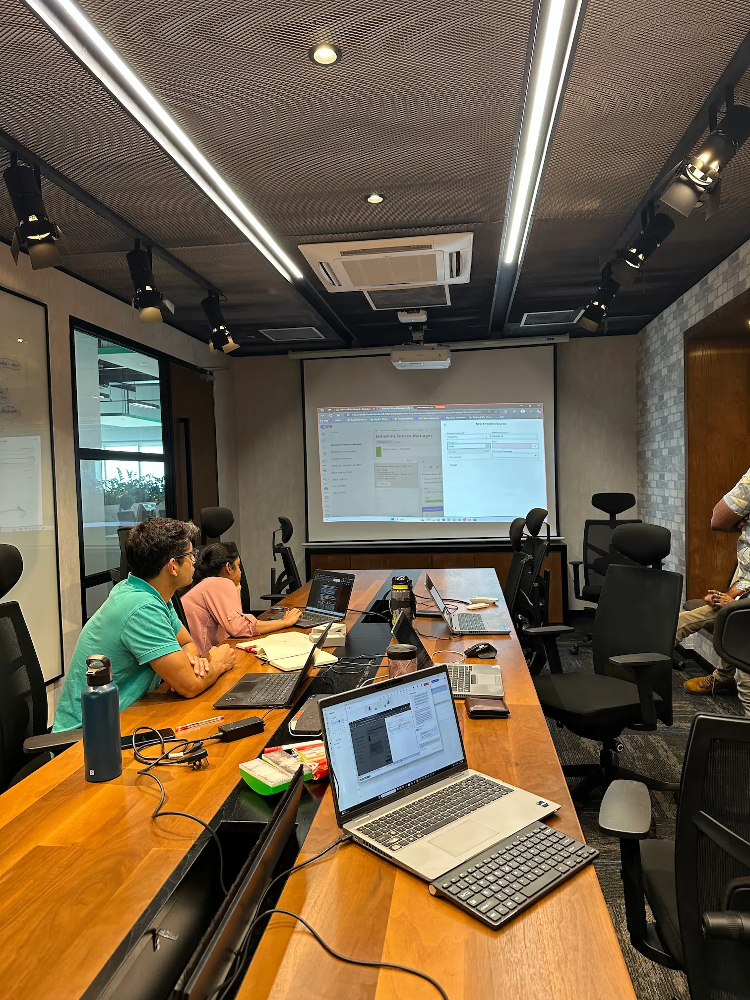
Live interface testing: evaluating emission source configuration flows
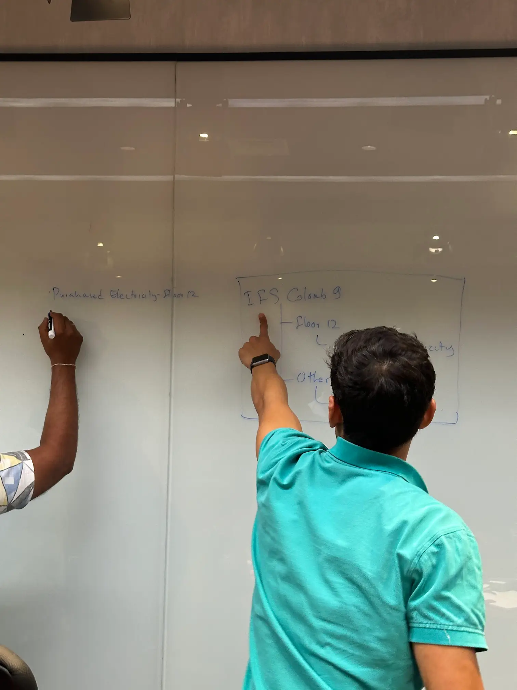
Modelling real organisational hierarchies: IFS Colombo as reference structure
Sketches & Early Exploration
I explored multiple directions through rapid sketching, focusing on divergent thinking before converging on solutions. The goal was to challenge assumptions about how sustainability data should be structured and presented.
Early Designs
Wireframes and mid-fidelity explorations shaped the final direction. Each major screen went through 15-20+ iterations based on stakeholder feedback and usability validation.
Dashboard Approaches
We explored multiple dashboard paradigms from compliance-focused reporting views to operational dashboards centered on actionable insights. Early versions prioritized regulatory structure; later iterations shifted to operational mental models.
Data Capture Patterns
The data entry experience went through significant iteration. Early designs felt like compliance forms; final versions introduced guided wizards with smart defaults and contextual help.
Usability Testing & Validation
A formal usability session was conducted in June 2025 with an IFS Global Climate Strategy Manager, a power user representing the Sustainability Manager archetype.
The June 2025 post-session survey recorded average satisfaction of 3 out of 5. This was formative research across two enterprise users, not a post-launch outcome or a representative benchmark. The feedback highlighted friction in emission source hierarchy, bulk upload, Scope 3 coverage, and ERP integration, guiding further design iteration.
2
Enterprise Users
Global Climate Strategy Manager & Product Specialist
~2 hrs
Session Duration
Recorded, moderated, Jun 5, 2025
WHAT WORKED
Activity data entry
Navigated to the right screens without prompting.
Configuration flows
Sites and legal entity setup rated most intuitive.
WHAT NEEDED WORK
Emission source hierarchy
Defining and organising sources was consistently confusing.
Bulk data upload
Bugs caused error states that looked like product defects.
Final Designs
What follows is a walkthrough of the key experiences we shipped, along with the thinking behind each decision.
Everything starts here. Before tracking a single emission, users need to see their organization laid out clearly: companies, sites, facilities, and how they all connect. This is the foundation the rest of the platform builds on.
The publicly available version of IFS Cloud uses a dense, narrow list pattern that tries to pack everything into a small column. On lower-spec machines, this approach eats up resources, freezes the screen, and makes the whole interface feel sluggish. We saw this first-hand during internal testing.
The current IFS Cloud list: cramped columns, nested tree nodes, heavy rendering. This is what we set out to replace.
Instead of that pattern, I introduced a spacious, interactive layout. Companies sit in a searchable list on the left. Selecting one reveals its sites with real detail: location, type, emission source count. No cramming. No guessing. Users can scan the full organizational picture at a glance and drill into any site to see its linked emission sources, each tagged with scope and status.
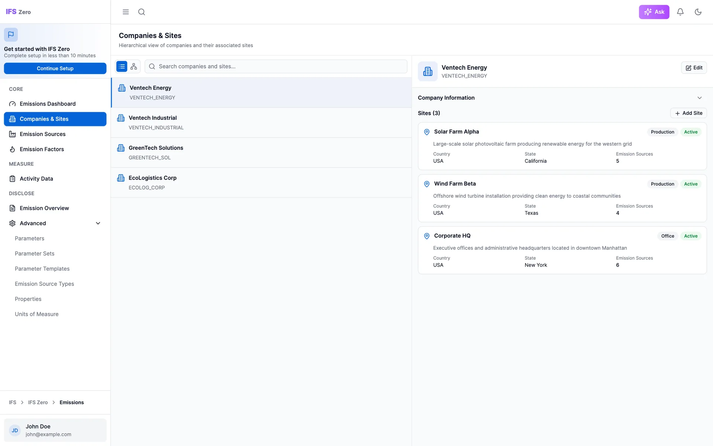
Companies & Sites: spacious layout showing company detail with sites, locations, and types at a glance
Selecting a site expands to show its emission sources with scope tags, status, and last-updated timestamps
Visual tree view: the full organizational hierarchy mapped out with emission source data overlaid
"The old list chokes on anything above 50 entities. This new layout actually loads, and I can find what I need without scrolling endlessly."
Internal testing
Frontend engineer, early prototype review
"Architecturally, this is night and day. We're only rendering what's visible now. The old pattern pulled the full tree into memory on load, which is where the bottlenecks came from."
The previous IFS Cloud list rendered the full organizational tree on load, pulling every node into memory. On large tenants, this created visible lag and frequent freezes, especially on standard-issue corporate hardware.
Our approach loads only what's in view. Selecting a company fetches its sites. Selecting a site fetches its sources. The result: faster loads, no freezes, and a layout that actually scales with the data.
Operations-First Dashboard
The dashboard flips the traditional compliance hierarchy. Instead of leading with Scope 1/2/3 breakdowns, we lead with what's actionable: emission hotspots, trending comparisons, and direct links to the activities behind the numbers.
Users see their operational reality first, then drill into compliance views when reporting deadlines come around.
Energy dashboard: year-over-year comparison, source breakdown, and energy mix distribution
25R1 Lobby design: widget ideation alongside competitor reference and user role mapping
Guided Data Capture
Data entry went from dense compliance forms to guided experiences. Smart defaults pre-populate where possible, contextual help explains jargon in plain language, and validation catches errors before submission.
The system pulls from existing ERP data (asset hierarchies, procurement records, work orders) so users don't re-enter what the organization already knows.
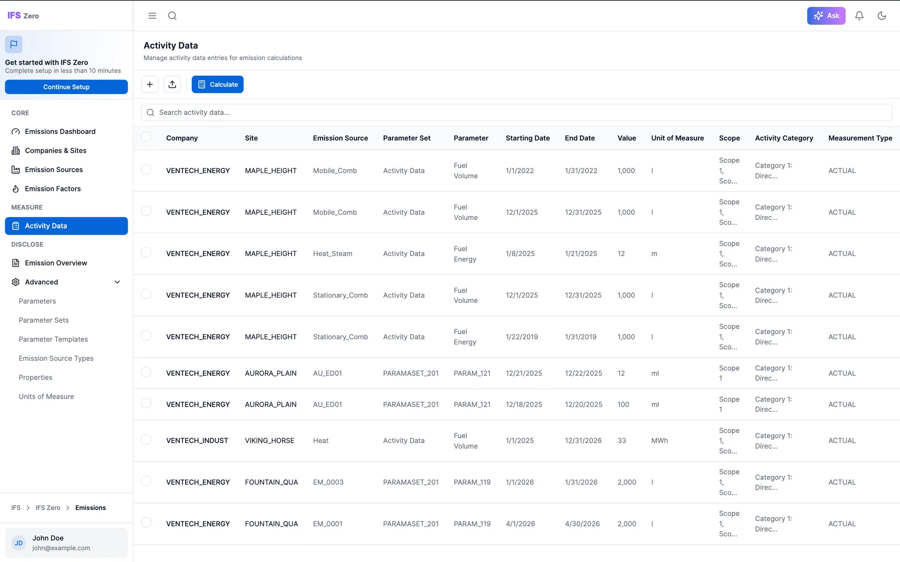
Activity data table: all emission entries across companies and sites in one place
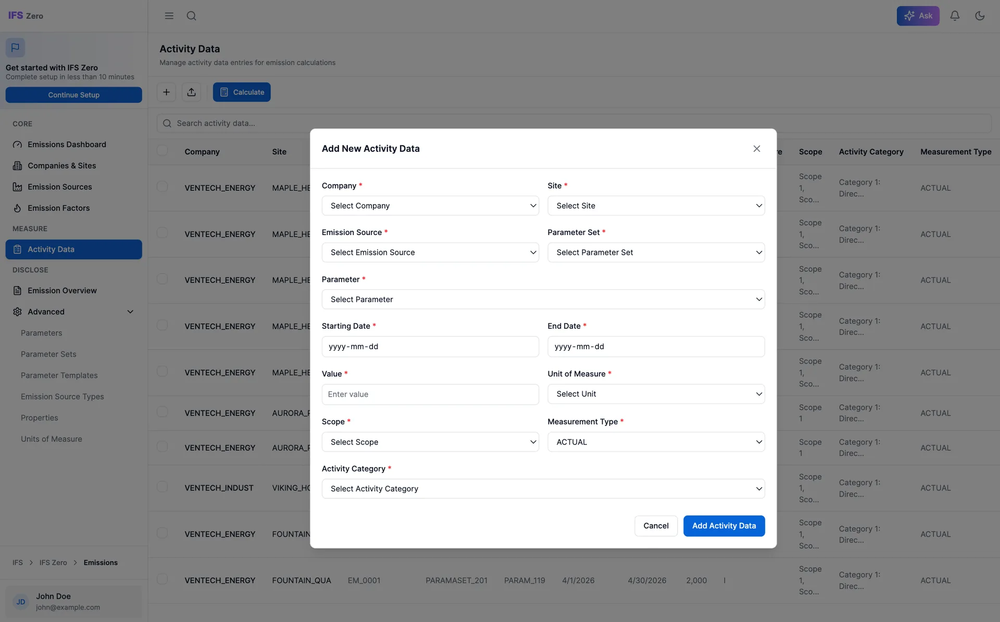
Guided entry form: company, site, emission source, and measurement fields laid out step by step
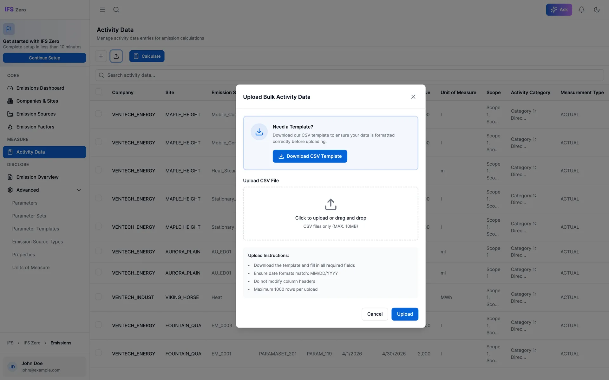
Bulk upload: CSV template with validation rules for importing large datasets
Emission Source Configuration
Every emission source (fleet vehicles, boilers, refrigerant systems) carries its own parameters, calculation method, and reporting cadence. The detail panel gives users everything in one place: metadata, parameter tables, configuration tabs, and calculated results, without jumping between screens.
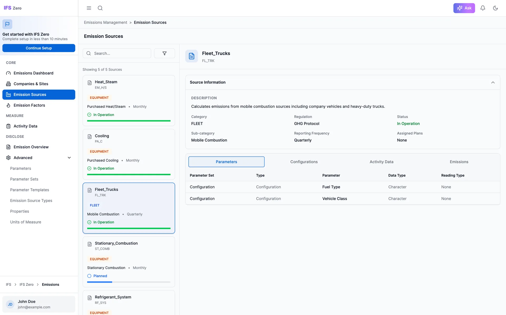
Fleet_Trucks source: parameters, category, sub-category, and reporting frequency
Same source with emissions calculated: linking configuration directly to results
Verified Emission Factors
Through Climatiq integration, users get access to verified emission factors maintained by environmental data specialists. No more guessing which factor to apply. Users describe their activity, and the system matches the right factor with a full audit trail for compliance.
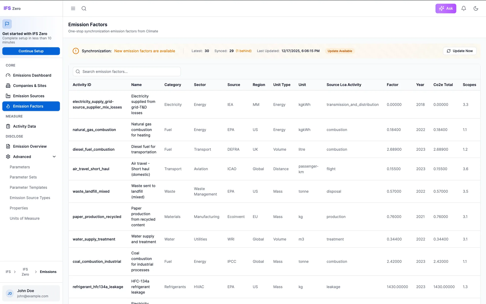
Emission factors library: new factors from Climatiq ready to sync
After sync: all factors up to date with verified external sources
Advanced Configuration
Large organizations need to tailor the system to how they operate. Parameters, templates, parameter sets, source types, and units of measure are the backbone here. Every configuration screen uses the same pattern: searchable list on the left, contextual detail on the right when something is selected. Familiar once you've used one, easy to pick up across all of them.
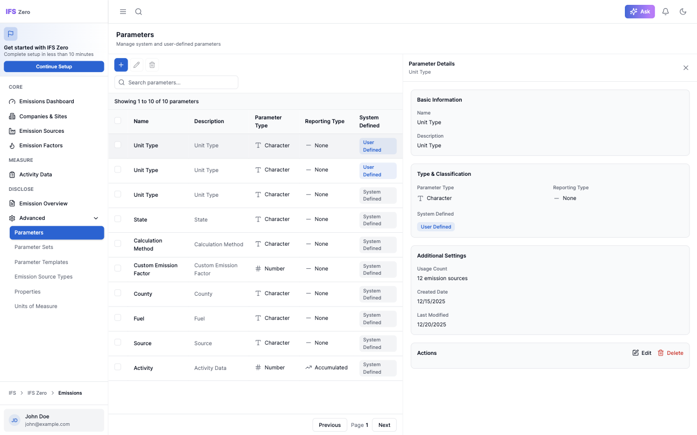
Parameters: type classification, reporting frequency, and settings in a consistent master-detail layout
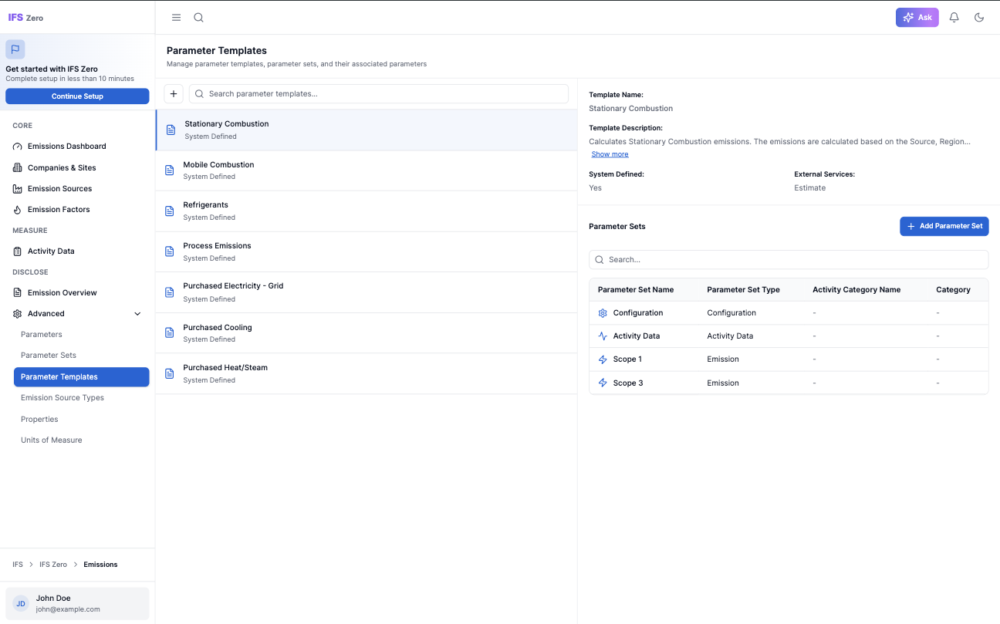
Parameter Templates: reusable templates tied to emission source types
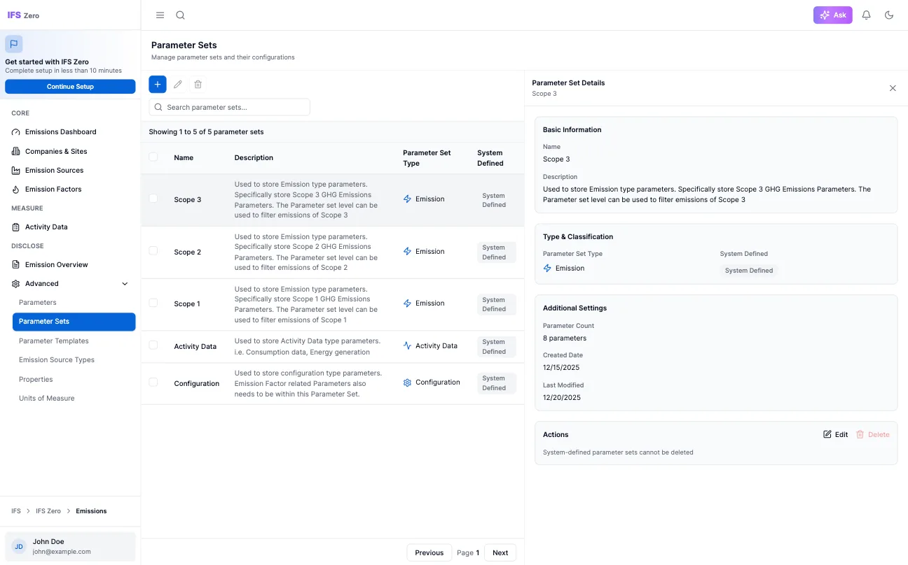
Parameter Sets: grouped parameters with scope and activity category mapping
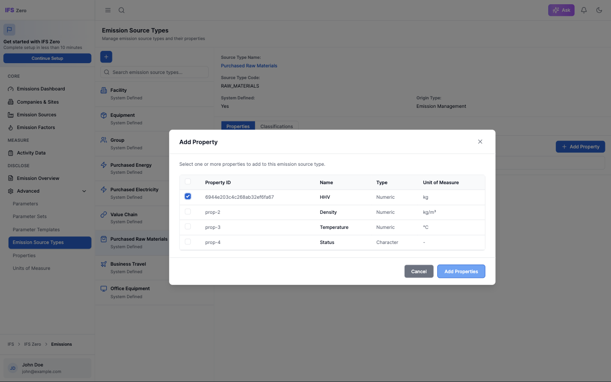
Emission Source Types: adding custom properties for organization-specific tracking
Units of Measure: sustainability-specific units with conversion factors and CO2e equivalents
Selecting a unit reveals conversion details, system info, and related configuration
Action Planning & Targets
Reporting only matters if it leads somewhere. The action planning module connects reduction targets to actual emission sources so progress updates automatically as operations change. No separate tracking tool needed.
IFS Zero / ACTION
From emissions to action
Connect the work on the ground to the reduction goal.
01
Emission source
Identify the operational source contributing to emissions.
Source & baseline
02
Reduction action
Link an operational change to the source it affects.
Action & owner
03
Reduction target
Define the reduction goal and the period for achieving it.
Goal & timeframe
04
Track progress
Follow progress as activity data and emissions change.
Actuals against target
↳ Updated activity data feeds progress tracking, keeping the target connected to operations.
Workflow illustration · How reduction targets connect to operational activities.
Compliance-Ready Reporting
When reporting deadlines hit, the system generates export-ready documentation aligned with GHG Protocol, CSRD, and industry-specific standards. Every data point carries full provenance, so audit prep is a straightforward export rather than a last-minute scramble.
IFS Zero / REPORTING
From source data to report
Keep the evidence connected at every step.
01
Activity data
Capture operational records for the reporting period.
Source records
02
Calculation
Connect activity data to emission factors and methods.
Factors & methods
03
Review
Check completeness and trace figures back to their inputs.
Data & provenance
04
Report export
Bring the reporting data together for disclosure and audit prep.
Reporting output
↳ Traceability runs back through the workflow: report → calculation → original activity record.
Workflow illustration · Traceability from reporting output back to source records.
Building intelligence into enterprise emissions workflows
The AI Assistant brings intelligence into the emissions workspace: it pulls emission summaries, flags data gaps, checks compliance status, and runs trend forecasts. Quick actions give structured entry points for the most common tasks, and the built-in support channel (live chat, phone, ticket submission) keeps users moving without switching tools.
AI Assistant open alongside the dashboard, pulling contextual insights in real time
Emissions summary with key metrics and breakdown charts
Data quality scoring and proactive compliance recommendations
Forecast trends: projected emissions trajectory and compliance outlook
Quick actions and integrated support: structured task entry with built-in ticket submission
Validation
The product is live. My involvement ran from 2023 to 31 January 2026, when I left IFS. The findings below reflect formative usability research conducted during my involvement, not post-launch outcomes.
2Enterprise users in formal usability sessions: Global Climate Strategy Manager & Product Specialist
The project also validated IFS's next-generation architectural approach. Composable micro-frontend patterns delivered better user experiences faster, and the learnings from IFS Zero fed directly into the broader platform evolution strategy.
What We Learned
Design for operators, not auditors
Compliance is the destination; operations is the journey. When we shifted our primary persona from compliance officers to operations managers, usage patterns improved dramatically. The compliance views still exist but they're accessed when needed, not imposed as the default structure.
Platform constraints can be design opportunities
What initially felt like limitations legacy architecture, performance constraints became innovation drivers. Building for these constraints forced cleaner information architecture and more thoughtful progressive disclosure.
Integration beats features
The most valuable differentiator wasn't any single feature it was the integration story. Auto-populated data from existing ERP records, organizational hierarchies that matched operational reality, and action plans connected to actual activities. This integration eliminated the "bolt-on" feeling that plagued competing solutions.
Future
Expanded Scope Coverage
Initial release focused on Scope 1 and 2 emissions. Future iterations will expand Scope 3 coverage supply chain emissions, product lifecycle, and customer usage the most complex but often largest portion of enterprise carbon footprints.
Predictive Insights
Moving from historical reporting to predictive modeling. Help users understand the emission impact of operational decisions before they're made not just measure them afterward.
Industry-Specific Templates
While the current experience serves general enterprise needs, future work will introduce industry-specific configurations pre-built emission source templates, relevant benchmarks, and sector-appropriate guidance for aerospace, manufacturing, energy, and defense customers.
This has been one of the most rewarding projects of my career building something that contributes to meaningful environmental outcomes while pushing the boundaries of enterprise UX.
Thank you for reading through. Hope you enjoyed learning about the design process.